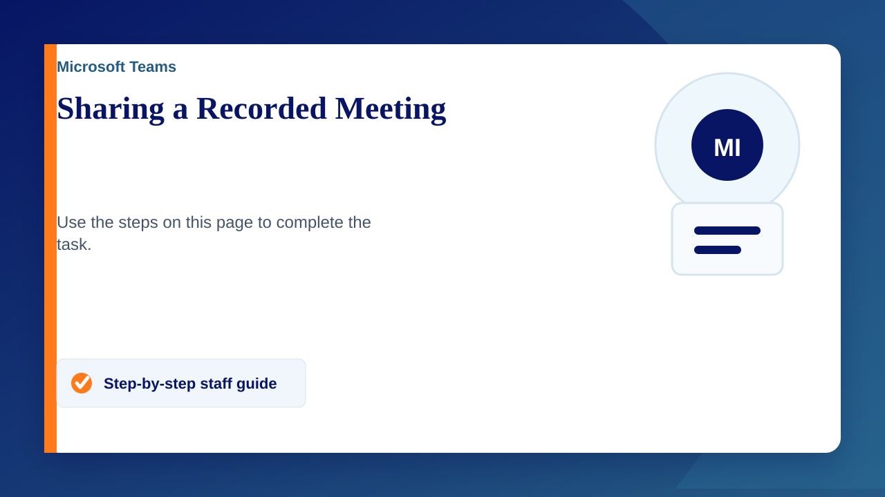

Sharing a Recording
- Log into Teams
- Go to the Chat tab
- Select the meeting chat
- Click on the recording to open it
- Click "Open in Stream" in the top right
- Click "Share" also in the top right
- Click Share
- Click settings cog next to "Copy Link"
- Change to appropriate setting for your scenario
- Click Apply
- Copy link and send in email or message.